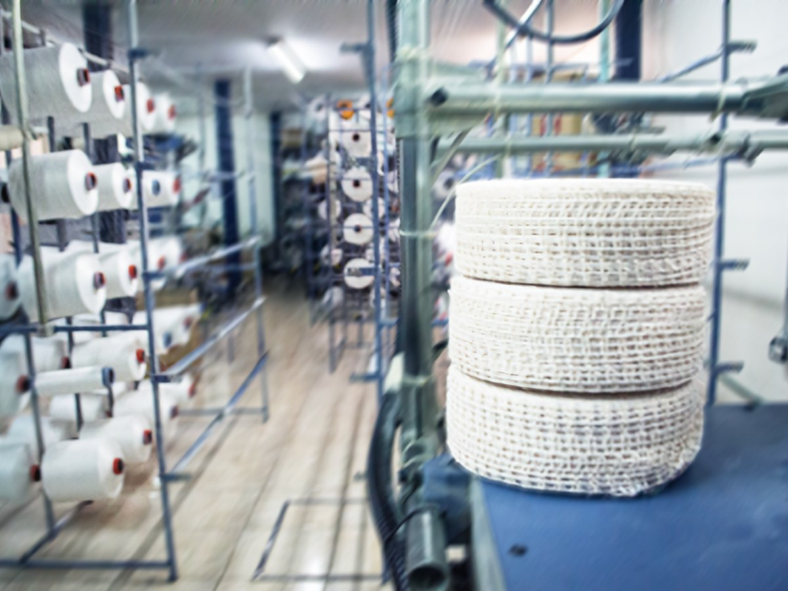
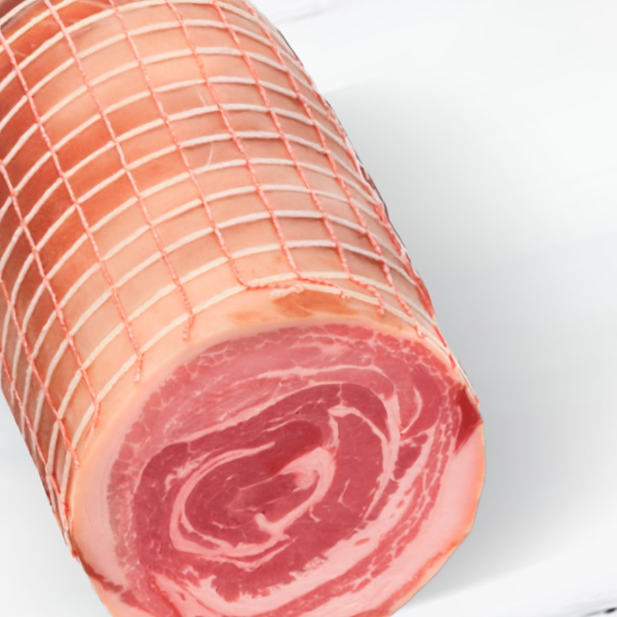
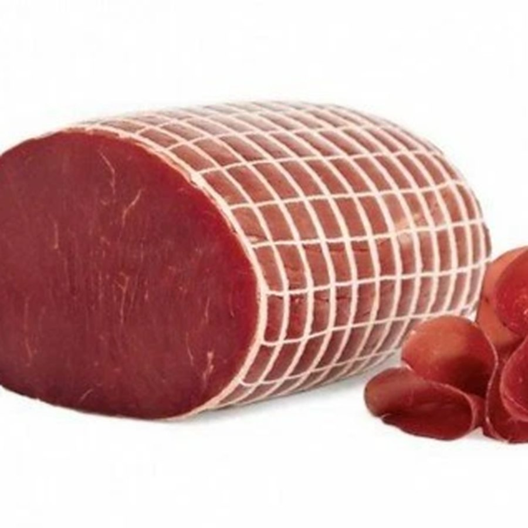

Enets® elastic netting for coppa, loin, pork belly and bresaola
Knitted in our own plant, on rolls. Even hold during curing and cooking, good ventilation and a neat presentation. Choose yarn, colour and compression; double elastic for extra hold.

- 14, 20 and 44squares
- 50 m rollsready for the netting machine or tube
- Double elastictwo threads together in the weft
- Polyester, cotton or compostableyarn to your choice
The result
Finished pieces made with our products





Custom compression
Standard models or the exact compression your product needs, to follow shrinkage during curing without over-marking the piece.
The double-elastic version has two transverse elastic threads together in the weft instead of one: more hold for heavy or long-cured pieces such as coppa and bresaola.
Yarn and colour
Polyester, cotton, polyethylene or compostable material. White, red, natural or the colour you ask for, so the net also sells on the shelf.
Squares and uses
50 metre rolls. For ham and mortadella we use 60-square non-elastic nets on 100 metre rolls.
- 14 squares: rolled roasts
- 20 squares: coppa, loin and pork belly
- 44 squares: jamoneta
| Net | Flat width (cm) | Maximum width (cm) | Squares |
|---|---|---|---|
| Coppa No. 3 | 5 | 20 | 20 |
| Coppa No. 4 | 6.5 | 22 | 20 |
| Coppa No. 5 | 7.5 | 27 | 20 |
| Jamoneta | 10 | 32 | 44 |
Frequently asked questions
Which elastic net do I use for coppa?
The 20-square net on a 50 m roll, model Coppa No. 3, 4 or 5 depending on the diameter of the piece. With double elastic if you want more hold. More detail under coppa netting.
Can the nets be made in another colour?
Yes. We make them in white, red, natural or the colour you need, in polyester, cotton or compostable material.
What is double elastic?
Two transverse elastic threads knitted together in the weft. It gives more compression and hold than a single thread.
How are they delivered?
On 50 metre rolls, ready for the netting machine or the loading tube.